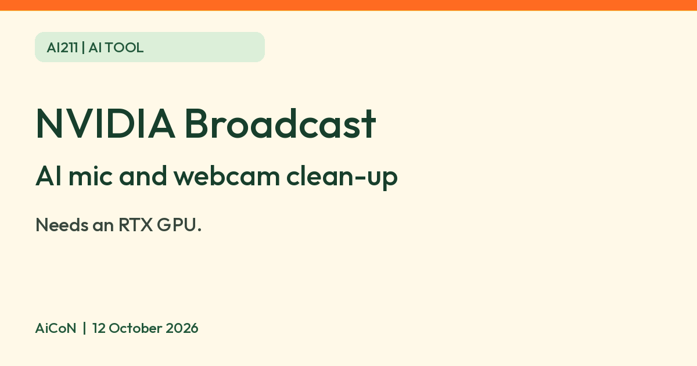

NVIDIA Broadcast: AI mic and webcam clean-up for RTX Windows PCs, called free in NVIDIA's 2024 blog
NVIDIA Broadcast cleans up your mic and webcam with AI and is called free in NVIDIA's June 2024 blog. Current product pages show no price or paid plan. It needs a Windows PC with an NVIDIA RTX graphics card.

What it is
NVIDIA Broadcast is a Windows app that uses AI to clean up your microphone and webcam. NVIDIA's pages list noise and echo removal for your mic and for incoming audio, a virtual background (replace or blur), auto frame that follows you, eye contact, and low-light video clean-up. It shows up as a virtual camera and microphone, so it works with video-call and streaming apps such as Zoom, Microsoft Teams, Discord and OBS, per NVIDIA's FAQ.
Is it free?
NVIDIA's own blog says it is a "free application" and tells readers to "Download NVIDIA Broadcast for free on any RTX-powered desktop or laptop". That blog post is from June 2024. The current Broadcast page and FAQ do not show a price or a paid plan. The real cost is the graphics card, because it needs an NVIDIA RTX GPU.
What your PC needs
- GPU: GeForce RTX 2060, Quadro RTX 3000, TITAN RTX or higher, per NVIDIA's page. GTX cards cannot run Broadcast. The FAQ instead points them to the separate RTX Voice noise-removal app, with results that may vary.
- Recommended CPU: Intel Core i5 8600 or AMD Ryzen r5 2600 or higher.
- Windows 10 64-bit, 8GB RAM, and a recent NVIDIA driver (570 or newer).
- Internet connection while installing to download AI models for your GPU. Studio Voice and Virtual Key Light need an RTX 3060 desktop GPU or better.
- The listed system requirements name Windows 10. NVIDIA does not mention Mac or Linux.
How to set it up
- Check GPU, driver, RAM and Windows requirements on the official product page before downloading.
- Install with internet access so Broadcast can get the AI models for your GPU.
- Choose the microphone, speaker or webcam and effects inside Broadcast.
- In your call or streaming app, select the NVIDIA Broadcast virtual microphone, speaker or camera instead of the original device.
- Try a short call first. The FAQ says to turn off similar effects on the source device so the same effect is not applied twice.
Performance limits
Effects use GPU resources. NVIDIA says combining effects increases the load and not every combination works. Studio Voice is intended for non-gaming calls, livestreams or content creation, and is not recommended while gaming or using another GPU-intensive app. If performance drops, turn off unused effects or lower camera resolution or frame rate.
Privacy
NVIDIA's blog says the app uses the Tensor Cores on your local RTX GPU to run the AI effects. We did not find a data-collection statement on the Broadcast page or FAQ, so local effects do not establish a no-collection or no-retention promise. Your call or streaming app has its own data handling too.
India
NVIDIA's Broadcast pages that we read name no country restriction. They do not publish an India statement, so we cannot confirm India availability from an official page. If you have an RTX card, check that the download opens for you.
Frequently asked questions
Do I need an RTX card?
Yes for the full app, says NVIDIA. The separate RTX Voice app offers GTX noise removal with varying results; this is not GTX support in Broadcast.
Does it work on a Mac?
NVIDIA's pages list Windows only.
Does it work inside Zoom or Teams?
NVIDIA's FAQ lists both, plus Discord, OBS, Webex and others.
What changed since this post?
Official Broadcast page, FAQ and 26 June 2024 NVIDIA blog checked on 12 October 2026. The dated blog calls it free; current product pages show no price or plan. The product page shows 2.2.0 near the top and 2.2.1 in its download table, so a single current version is not stated here. GTX noise removal refers to RTX Voice, not Broadcast. Internet is needed during installation for model downloads. No installation, effect, India download or data-collection test performed.
Sources: NVIDIA Broadcast page, NVIDIA Broadcast FAQ, NVIDIA blog, June 2024. Checked 12 October 2026.